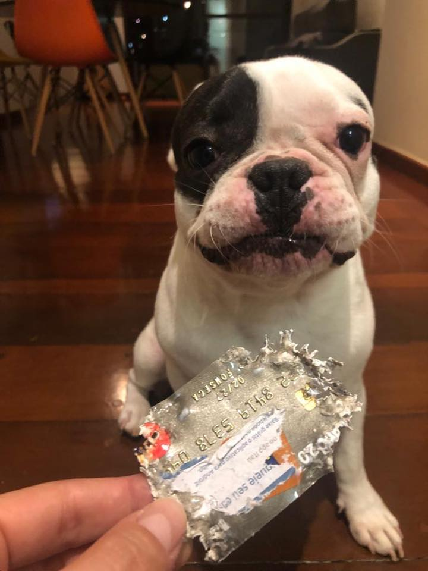

Gatilho Reciprocidade
Neste artigo será abordado o gatilho da reciprocidade, seu papel na criação de conexão com o leitor e como utilizá-lo no copywriting.
Os tópicos abordados nesse artigo serão:
- Entendendo o gatilho:
- Criando conexão com o público
- Como usar o gatilho
Entendendo o gatilho:
O gatilho da reciprocidade trabalha com a ideia de que os indivíduos costumam querer retribuir um favor ou gentileza que recebem. Existe um certo tipo de aversão na sociedade com as pessoas que recebem favores sem retribuir, sendo muitas vezes associados com aproveitadores ou parasitas. O medo de ser visto dessa forma pode levar as pessoas a serem mais propensas a esse gatilho.
O copywriter deve entender as necessidades de seu público e oferecer algo de valor para os possíveis consumidores gratuitamente. Um exemplo seria um curso de programação web que oferece algumas aulas gratuitamente. As pessoas ficam mais propensas a retribuir de alguma forma o conteúdo gratuito apresentado, seja comprando o curso completo ou indicando para outras pessoas o conteúdo gratuito.
É importante destacar que para reciprocidade funcionar devidamente, a marca deve oferecer algo gratuito que realmente gere valor aos consumidores. Portanto entender o público-alvo e suas necessidades é necessário antes de realizar um anúncio ou ação de marketing utilizando este gatilho.
Criando conexão com o público
Em 2019 um caso viralizou na internet. Mariana recebeu um cartão do itáu, mas infelizmente ele foi encontrado primeiro pelo seu cachorro Chico que comeu o cartão. Mariana postou no facebook o seguinte trecho:
Olá, Itaú!
Eu tenho um relato pra você.
Aconteceu ontem, 07/03/19, imagino que no período da tarde, pelo estado do meu problema
Há cerca de 20 dias eu comecei em um novo emprego, uma coisa que eu queria muito e que deu certo.
Junto com ele, veio o quê?
A necessidade de abrir uma conta no banco feito pra todo mundo.
Eu já estava prestes a cancelar a conta que tenho no seu concorrente, já que não preciso ficar com duas contas e, já que vocês facilitaram bem a abertura desta, não encontrei motivos para manter.
O cartão definitivo, confesso, demorou um pouco pra chegar, mas tudo bem, essas coisas são assim mesmo.
Eis que...chegou ontem.
E o porteiro do prédio - que não tem nada a ver com isso - foi na maior gentileza me fazer o favor de botar embaixo da minha porta.
E pasme, meu cachorro era o único que estava em casa pra receber por mim.
E ele o fez.
Ele o fez com tanta vontade que quase acabou com o limite.
~não disse qual~
Ele já havia destruído o IPTU, duas contas de luz, um boleto do condomínio e uma conta de gás. Até aí, tudo bem.
Só pude constatar o quanto ele é um árduo ativista anticapitalismo.
Mas o cartão?
Pra que isso?
Ficou decepcionado quando cheguei e expliquei que, era com aquele cartão, que compraria biscoitos e uma nova caminha, já que a outra ele destruiu.
Era papel pra tudo que é lado.
Cozinha, sala, corredor.
E, como boa brasileira, aquele fio de esperança em achar o cartão ileso.
Doce ilusão.
Ele estava na lavanderia.
~~mas eu garanto que o meliante, apesar de meliante, não mexe com essas coisas de lavagem de dinheiro~~
Acontece que hoje, na hora do almoço, terei que vestir o manto sagrado da 5ª série e ir com a cara mais deslavada do mundo até à agência dizer:
~~~MEU CACHORRO COMEU MEU CARTÃO~~~
Ele podia ter feito um golden shower no envelope, seria mais fácil resolver se fosse só isso, mas não.
O lance dele é a anarquia mesmo.
Eu to até levando a prova do crime, porque né...eu juro que é verdade!
Na hora de brigar eu dei uma fraquejada, porque OLHA ESSA CARINHA!
No mais, vou ter que dar mais brinquedos pra gastar energia e ver se consigo mudar issaê por bem.
A única conclusão é que a democracia na minha casa acabou.
Quem manda lá é ele!
Chico, 10 meses. Era 17h34. São Paulo. 24º. Monstrinho!
O resultado? O Itaú curtiu a postagem e aproveitou a oportunidade para criar uma conexão com a cliente. Eles atenderam a cliente e além de enviar um cartão novo, eles enviaram uma carta e alguns presentes para o chico, como biscoitos de camomila para acalmá-lo, uma bolinha e um osso. Mariana fez outro post agradecendo o banco pelo suporte, resultando numa ação de marketing barata com grande alcance. Para entender melhor a importância da indicação de clientes em relação a determinado produto/serviço leia o artigo sobre o gatilho da afeição.
Como usar o gatilho:
Ofereça gratuitamente algo que gere valor: O que for oferecido deve ser relevante para o seu público-alvo: Um e-book, amostra gratuita, vídeos sobre o assunto, infográfico, planilhas etc. Muitas vezes as empresas pedem o e-mail da pessoa para que ela receba o produto, isso permite com que a empresa ofereça mais conteúdo gratuito por meio do e-mail e futuramente faça uma oferta.
Destaque o benefício do seu presente: É importante explicar como seu presente vai ajudar seu público-alvo e detalhar como usá-lo. Exemplo: É oferecido uma planilha para o planejamento de posts de um social media, deve ser explicado como ela pode ajudar e como utilizar as planilhas.
Monitore os resultados: É importante ver se o conteúdo está sendo baixado e se as pessoas que baixaram tiveram o interesse de voltar no site do seu produto/serviço e realizar uma compra. A vezes a chamada para o produto pode ser boa, mas o conteúdo pode ser insuficiente, impedindo que as pessoas criem interesse em sua marca.
Seja transparente: A reciprocidade tende a funcionar melhor quando é genuína. Ofereça algo de valor e evite estratégias enganosas, como presentes que não auxiliam o público verdadeira e tem como objetivo principal apenas pegar o e-mail do cliente.